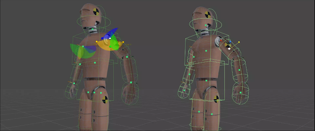
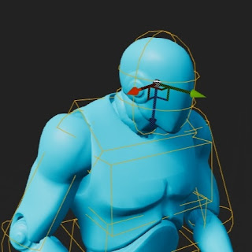
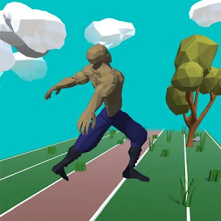
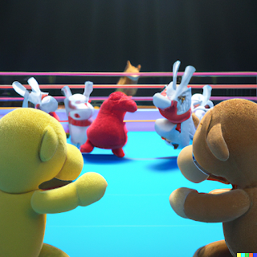

~*
Engineering Arts Lifestyle
Processing life, one iteration at a time. The Tilde Asterisk (~*) brand encompasses Software, Electronics, Game Development, Philosophy, Art & Design.
It's a lifestyle.
Read more...
🦾 Physicanim Unity Plugin
This Unity asset package contains an active ragdoll toolkit for the Editor that allow you to convert any
humanoid character animation to physics driven animations. Convert any rigged humanoid character into an
advanced procedurally animated active rag-doll.
*A.K.A* Physicanim Character ~*.

Features
- Physicanim Active Rag-doll Builder
- Create and convert character models into Physicanim active ragdoll characters in one click!
- Basic Physicanim Character Behaviours
- Fall down, get back up.
- Physicanim Character Controller

🦿 Physicanim Character Behaviours
The Physicanim Character Behaviours class provides the active ragdoll a number of procedural behaviours to
react to the standard situations. It is able to walk, run, jump, trip, fall and then get up. While falling,
the Physicanim character tries to maintain
a protective pose. When getting back up, the movement lock to the root of the static animator is slowly
increased to transition from free falling to animation root motion control.

📝 Developer Comments
For many years I have been making games in Unity exploring ragdoll physics and procedural animation. Setting up
an active ragdoll for every project can become very tedious, so I have developed a Unity Package that will
create your active ragdoll, set
up its bones & joints and animate it in a way that is physically simulated with physics rigid body and collider
components. The package is available install through the Unity Package Manager and on the
GitHub page.

🏃♂️ Floppy Sprinter
Alternate between tapping the Right and Left buttons to control their steps.
Be careful not to step with
the same leg twice or with both legs together or you will trip over and flop!
Keep your rhythm or sprint as
fast as you can!
With each tap step you can break new speeds and distances.

An infinite runner with an active rag-doll physics simulation, procedural animation twist. Floppy Sprinter
is a game released to the Google Play Store in 2018 where it performed quite well. Earning a 5 star rating and
approx. 100 downloads.
Since then it has been taken down from the app store and it can be downloaded via various online .apk libraries
for Android apps such as
APK
Combo.
Over the development of this game, I was able to develop the ideas, concepts and mechanics behind active ragdoll
physics, simulation driven, procedural animation. Going on to develop the Physicanim ~* Unity Asset Package to
help other game developers
around the world to solve the problem of rigid body animated characters and their interactions with physics
objects in the environment.Kendo Duel is a game released onto the Google Play store in 2016.# Dynasty Dispute
*A.K.A.* MMORPSG~*
Tilde Asterisk's Massively Multiplayer Online Role Playing Strategy Game is currently in development and
has been since the end of 2023. Players build their home base on a 21 by 21 grid, arranging their resources and
defences appropriately.
Defend your base from attacks from enemies and send out raiding parties of your own. Customise your player
equipment and home base. Interact, trade, message, fight other players.
- Multiplayer and played in Browser.
- You play the role of a leader. Build yourself up from rags to riches. Customise your character and make decisions build your empire.
- Prepare and plan your attacks and defences . Customise your base and interact with other players. Send out parties and form beneficial relationships.
🙀 Plushie Panic
[CLICK THE BOX IN MIDDLE OF
SCREEN TO EXPAND]
Your room is a complete mess! Clean up all the toys by putting them away in the toy box. Punching enemies in the
head will knock out, once enemies are knocked out they are easier to grab them with both hands and carry them
over to the toy box.
🎛️ Controls
| Action | Keyboard & Mouse | Controller |
| ------------------ | ------------------ | ------------- |
| Move | W, A, S, D | Left Joystick |
| Left Punch / Grab | Left Mouse Button | West Button |
| Right Punch / Grab | Right Mouse Button | East Button |
| Jump | Space Bar | South Button |
| Restart Level | _ | Pause Button |
📝 Developer Comments
Plushie Panic! is a project that I worked on for a few months in mid 2020 along with two other developers.
Initially the project was intended to be a multiplayer brawler, code named Toy Rumble. Making use of the
[Physicanim ~*](Physicanim) Active Rag-doll
System results in a fun, dynamic and more interactive-feeling gameplay. The multiplayer development was halted,
and I decided to make a single player demo in order to demonstrate the concept and the stage in the development
process.

📖 Guides
--- date: 2022-11-07 ---
How to fully customise your Blogger website. [HTML + CSS]
This document will teach you how to customise your Blogger website theme, starting from a chosen template. It is
difficult to create a Blogger site from scratch because there is alot of code required to allow for the Blogger
website to update itself with
posts that you publish and other Blogger functionalities. As there is no blank blogger template, we will start
with a default blogger theme that is most similar to the one we desire create.
Styling your Blogger website:
Open your Blogger page in the browser of your choice and open the Developer Tools (Usually F12).

Here you can select an element to view and edit it's CSS in real time. Once you have made a change you can
right copy the CSS rule including the name/class of the element right into the HTML code of your page on
Blogger.
### Upload & publish your changes:

In the sidebar, select the Theme page and choose a theme from the options given. (Pick one that is most
similar to the way you want your website to look, it will give you an easier starting point.)

 link
link
Click customise and then Edit HTML.
 link
link
Click on the code and press CTRL + F and search for `/b:skin`. This will take you the end of where all the
CSS styling is defined in the Blogger theme.--- tags: - Physicanim --- In this tutorial you will learn how to
create and animate active
ragdolls in the Unity game engine using the Physicanim asset package.
## Installing the Physicanim package from git
 link
link
a
 link
link
https://github.com/TildeAsterisk/Physicanim.git
 link
link
Install GIT if necessary. [Git - Downloads](git-scm.com)/>
link
Create a Physicanim Character In order to create your active ragdoll you will start
with a normal character model playing a regular animation. Make sure your character is rigged as a humanoid.
 link
link
- Import you character into the scene. - Drag and drop your chosen animation onto your character.
 link
link
 link
link
 link
link
 link
link
📜 About
What began as a place to publish indie games and then a developers blog,
Tilde Asterisk (~*) has
become an emerging brand. Exploring projects across software, electronics and clothing;
Tilde Asterisk
~* continues to grow as a dynamic, multidisciplinary venture.
The two simple symbols: the tilde
(~) and the asterisk (*), put together as
~*, they form a kind of visual name, first name, last name.
It’s an alias, a pseudonym, a logogram and a signature. It’s clean and a little cryptic.
History
2016 — Kendo Duel The story begins with the release of [_Kendo Duel_](Projects/Kendo_Duel), the first
mobile game developed and published under what would become the Tilde Asterisk name. Built in Unity and
programmed in C#, the game
featured ragdoll-like physics-based sword combat. Its unpredictable and often comedic gameplay laid the
foundation for a unique design style focused on physical interaction and expressive movement.
2018 — Floppy Sprinter [_Floppy Sprinter_](Projects/Floppy_Sprinter) followed as a ragdoll physics-based
sprinting game, also released on the Google Play Store. Continuing the theme of humour and dynamic physics, it
embraced chaotic
motion and added another title to the growing indie game catalogue.
2020 — Tilde Asterisk Established Tilde Asterisk took shape with the launch of
TildeAsterisk.com,
which became a bit of a developers log the previous games were republished under a unified brand. This marked
the beginning of
its public presence. Since then,
~* has undergone multiple design
evolutions and creative
shifts. Exploring projects across software, electronics, and clothing; Tilde Asterisk continues to grow as a
dynamic, multidisciplinary venture. Always
evolving, always in motion.
2022 — Physicanim ~* Released as an open-source toolkit for the Unity Asset Store, [_Physicanim
~*_](Projects/Physicanim) is an advanced active ragdoll system for Unity. Designed to work seamlessly with
humanoid models and Mixamo animations,
it allows developers to create physics-driven procedural animation with just one click. _Physicanim_ makes it
easy to animate ragdolls and create complex, expressive characters; Merging technical flexibility with artistic
control.
The Logogram '~*'
A
logogram is a written character that represents an entire word or phrase rather than a single sound.
Unlike alphabetic characters, which are phonetic, logograms convey meaning directly. The combination
~*
functions as a
personal logogram, a compact symbolic representation of the name
Tilde Asterisk.
The Tilde '~'
The *tilde (~)* is a typographic symbol with various uses across different contexts. Its visual form, a small
wave, has led it to be informally associated with variation, approximation, or informal tone in digital
communication. - In
linguistics,
it appears in Spanish as part of the letter “ñ,” indicating a palatal nasal sound. - In **mathematics** and
**logic**, it often denotes approximation (e.g., π ~ 3.14) or negation. - In **computing**, it can represent a
user's home directory
in Unix-based systems (`~`), or serve as a shorthand for backup files or temporary versions. - In
**programming**, it may be used in expressions, bitwise operations, or pattern matching depending on the
language.
The Asterisk '*'
The
asterisk (*) is a typographic symbol used primarily as a marker or operator. Its shape makes it one
of
the most widely recognized non-alphanumeric characters in modern scripts. - In **writing**, it often indicates a
footnote, annotation, or additional
information. - In
linguistics, it can denote ungrammatical constructions or hypothetical forms. - In
**mathematics**, it functions in multiplication and denotes operations like convolution or the complex
conjugate. - In
computing,
it serves as a wildcard character, representing any number of characters in search patterns or commands. - In
**programming**, it can indicate pointers (in C/C++) or be used in unpacking arguments (in Python), among other
functions.
- tilde - asterisk - tildeasterisk date: